信号的合成与分解¶
傅里叶级数的三角形式、指数形式、相位、频谱
傅里叶的三角函数：
正交基：\(\cos1\omega x,\sin1\omega x,\cos2\omega x,\sin2\omega x,\cos3\omega x,\sin3\omega x,...,\)
傅里叶的指数函数形式：
正交基：\(\{e^{-jn\omega t},...,e^{-j2\omega t},e^{-j\omega t},e^{j0\omega t},e^{j\omega t},e^{j2\omega t},...e^{jn\omega t}\}\)
复数形式：\(a+bi\)
复指数形式：\(\sqrt{a^2+b^2}(cos\theta+i sin\theta)\)
其中，
\(cos\theta = \frac{a}{\sqrt{a^2+b^2}}\)
$sin\theta = \frac{ b }{ \sqrt{a^2 + b^2} } $
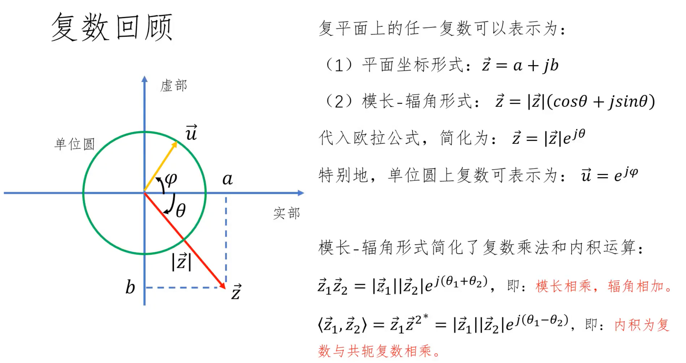
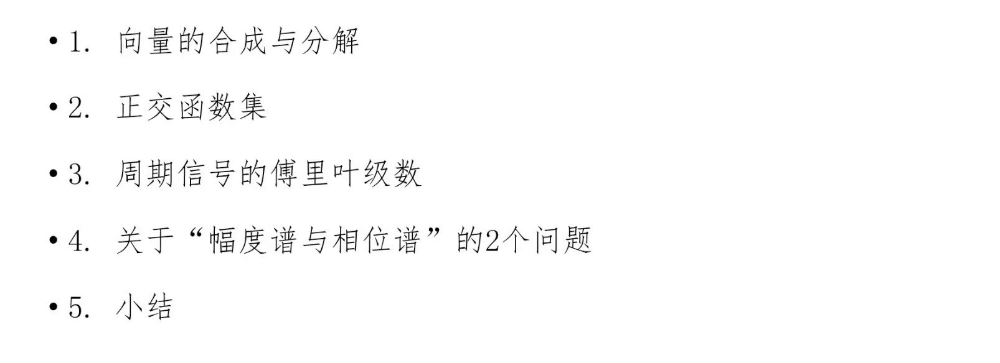
向量的合成与分解¶
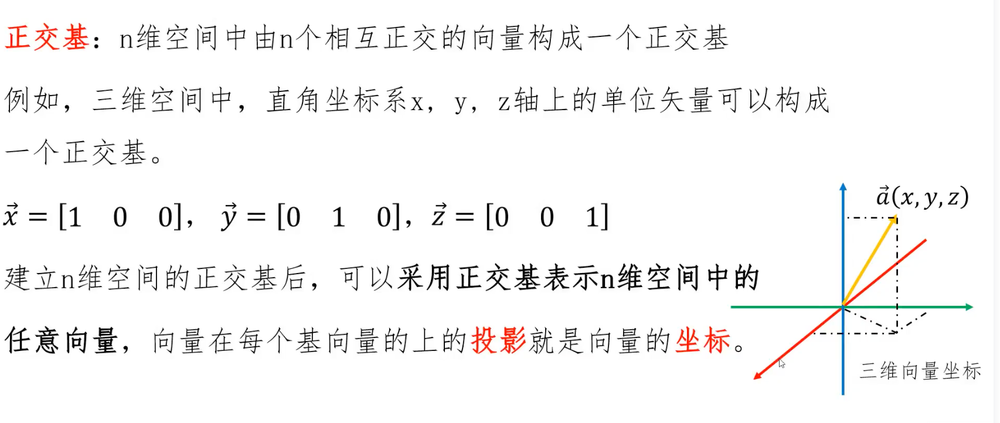
红色是想要表示的向量。
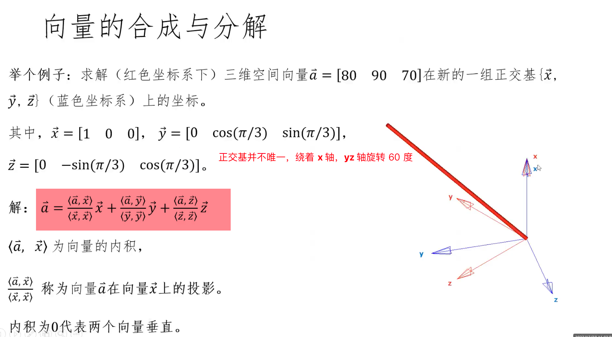
信号的合成与分解¶
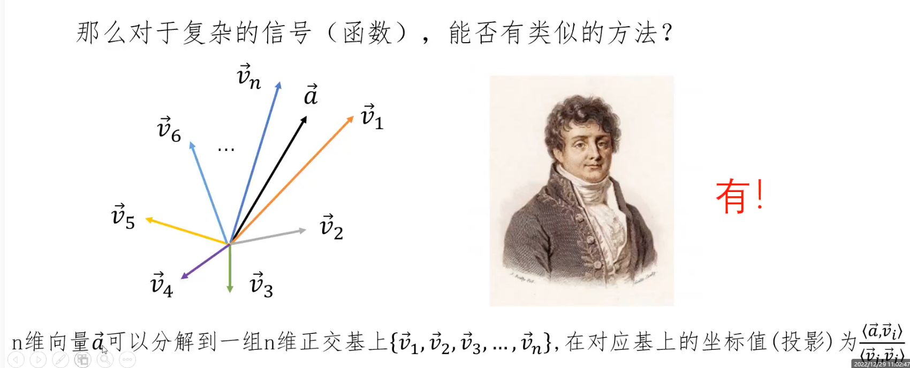
傅里叶变换的思想，将复杂的周期信号变成一系列简单三角函数的线性表示。
这个思想怎么这么像 泰勒展开，将任意一个函数展开成一系列幂函数求和。泰勒展开从导数角度逐点模仿。那，傅里叶变换呢？怎么用更通俗的语言描述？
函数内积：加法变积分运算
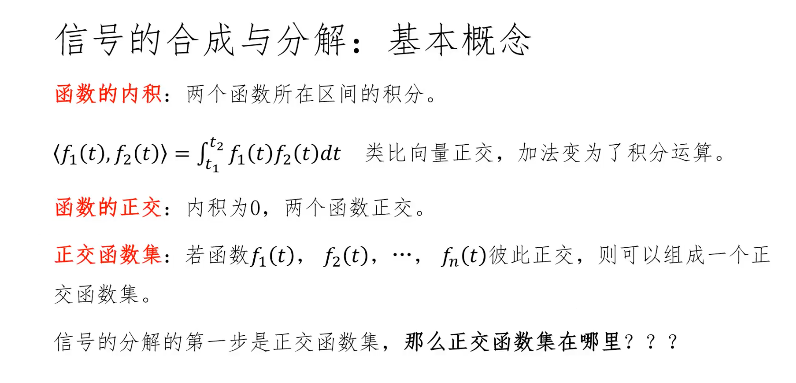
三角函数正交基¶
三角函数集的正交性
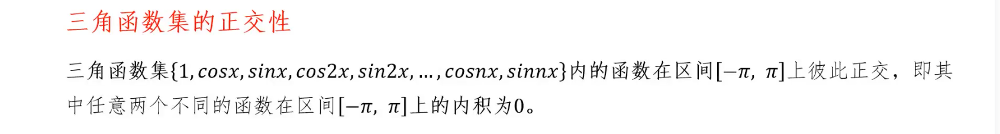
结论：
- 任意两个不同函数内积=0
- 相同函数内积 \(\neq 0\)

周期信号 傅里叶级数¶
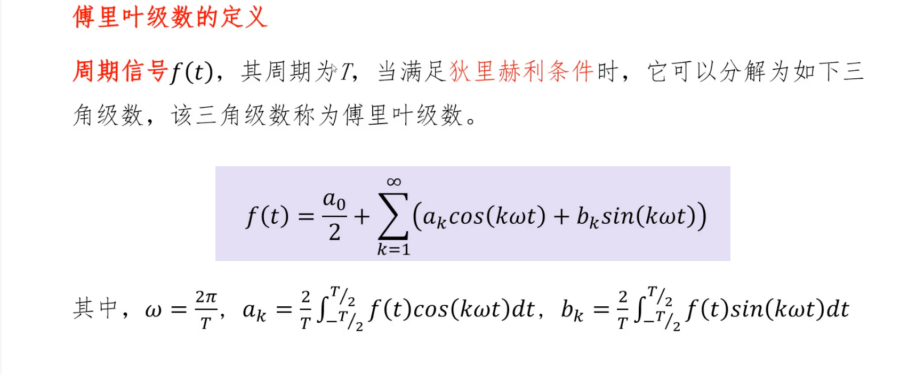
- 正交基是：
\(\{1,\cos x,\sin x,\cos 2x,\sin 2x,...,\cos nx,\sin nx\}\)
最大周期是 \(2\pi\)， 最大周期内 、正交基中的其余函数、重复整数次，如\(1,2,3,4,....n\)。就是正交基函数前面的系数。
理解（为了怕自己以后想不起来，重复无数次，不厌其烦🥲）：
- \(\cos x,\sin x\) 最大周期 \(2\pi\)
- \(\cos 2x,\sin 2x\) 周期\(=\pi\) ，最大周期 \(2\pi\) 内重复 2 次
- \(\cos 3x,\sin 3x\) 周期\(=\frac{2\pi}{3}\) ，最大周期 \(2\pi\) 内重复 3 次
- ...
- \(\cos nx,\sin nx\) 周期\(=\frac{2\pi}{n}\) ，最大周期 \(2\pi\) 内重复 \(n\) 次
- 傅里叶级数用的是：
\(\cos1\omega x,\sin1\omega x,\cos2\omega x,\sin2\omega x,\cos3\omega x,\sin3\omega x,...,\)
最大周期，就是要展开的周期信号的周期 \(T\) ，前面已经记 \(\omega = \frac{2\pi}{T}\)
-
\(\cos1\omega x,\sin1\omega x\) 最大周期 \(T\)
-
\(\cos2\omega x,\sin2\omega x\) 周期\(=\frac{T}{2}\) ，最大周期 \(T\) 内重复 \(2\) 次
-
\(\cos3\omega x,\sin3\omega x\) 周期\(=\frac{T}{3}\) ，最大周期 \(T\) 内重复 \(3\) 次
目前，就是感觉，傅里叶级数就是说把给定一组时间序列数据
这组时间序列数据是1个周期的可能性？是这么描述吗？
这组时间序列数据是2个周期的可能性，这组时间序列数据是3个周期的可能性，这组时间序列数据是4个周期的可能性，.......
或者说：
这组时间序列数据是2个周期的话，相关性，每个时间点与对应周期的三角函数的响应值的相关性？
这么描述：\(f(t)\)是想要分解的时间序列数据，要分解到这组时间序列数据构成 1 个周期，2 个周期，3个周期的标准正余弦函数上，也就是说三角函数正交基说的是 这组时间序列数据分解到哪个频率的 3 个函数上，遍历所有的可能性（\(1 \sim \infty\) DFT是 \(n=1 \sim N-1\)）。确定一个三角函数不仅需要频率，还有振幅和初始相位，三角函数的标准形式 \(A\sin(\omega x+\phi)\)
有了 \(\omega\)以后，还要找振幅 \(A\) 和初始相位 \(\phi\) 具体的就是正交基求 \(a_n\) 和 \(b_n\)了
串起来了，都串起来了，系数的含义。
后面还应该注意，为什么复指数形式更好，因为频率、相位、振幅都直观地显示了。
- 将原始周期信号表示成：直流分量、正弦信号、余弦信号线性组合的方式
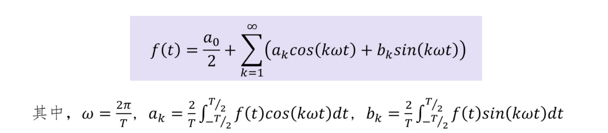
- 正余弦信号分别记为，1 次谐波、2 次谐波、3 次 谐波，意思就是频率分别是，\(1\omega\)、\(2\omega\)、\(3\omega\) ，这里的频率说的是角频率 \(\rightarrow\) 这个复杂的周期信号与简单的1次谐波、2次谐波的相关性🔴
- 这里的角频率可以一直取到无穷大
傅里叶计数的几何意义
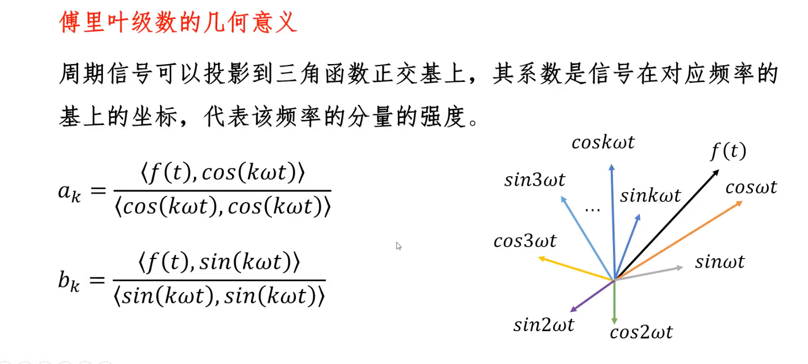
- \(系数\)表示信号在对应频率上的\(坐标\)
实例：方波信号的分解
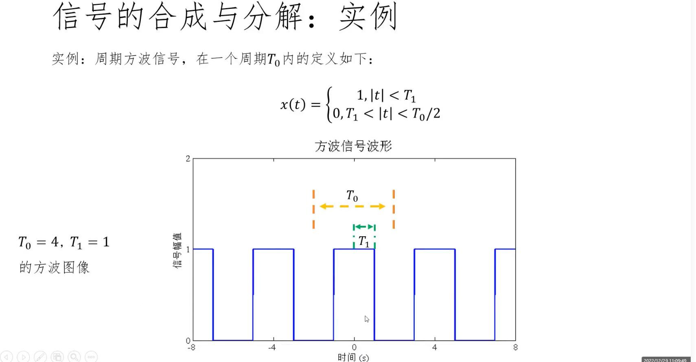
各种奇奇怪怪的周期信号分解成正弦信号和余弦信号的线性组合
例子中 \(T_0 = 4\) 的周期信号，其中 \(T_1 = 1\)
可以分解为直流分量，1 次谐波的余弦分量，3 次谐波的余弦分量还有 5 次谐波，7 次谐波
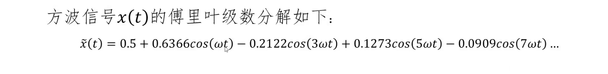
- 观察这个方波信号的分解：没有正弦分量 表示 这个方波信号在正弦奇函数上的投影=0，
- 同时，这个函数，并不是所有的余弦谐波分量都有，只有奇数项
可视化分解出的直流分量和谐波分量
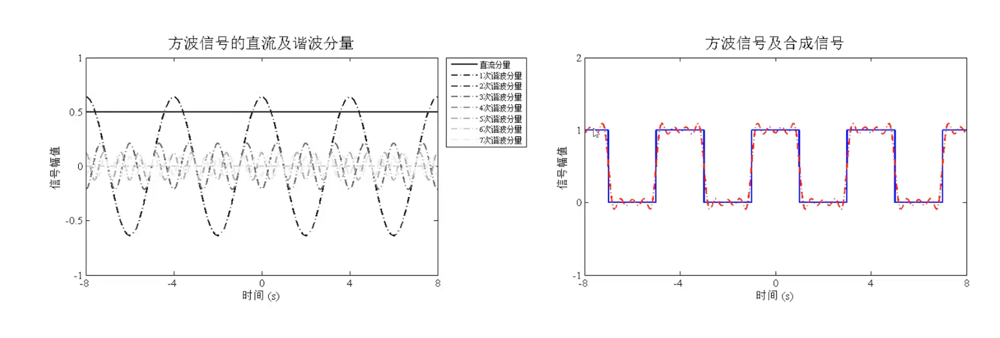
同时，随着谐波分量的增加，合成信号越来越逼近原信号。
- 下图中，阶跃处有尖点表示吉布斯现象，与狄利克雷条件有关，暂时不管
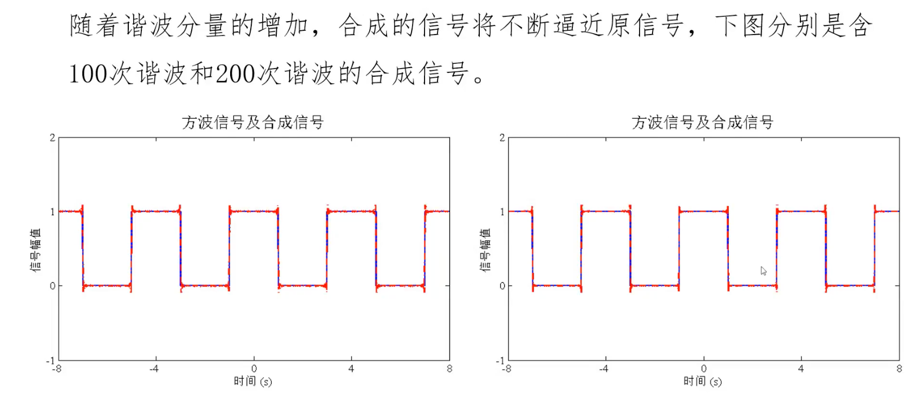
- 同时应当注意的是，周期信号使用傅里叶级数进行信号的合成与分解
- 对于非周期信号使用傅里叶变换进行 信号的合成与分解
- 这里我有一个问题
谐波分量？
最大周期，就是要展开的周期信号的周期 \(T\) ，前面已经记 \(\omega = \frac{2\pi}{T}\)
\(\cos1\omega x,\sin1\omega x\) 最大周期 \(T\)
\(\cos2\omega x,\sin2\omega x\) 周期\(=\frac{T}{2}\) ，最大周期 \(T\) 内重复 \(2\) 次
\(\cos3\omega x,\sin3\omega x\) 周期\(=\frac{T}{3}\) ，最大周期 \(T\) 内重复 \(3\) 次
感觉 这里的理解，还是得再加深一下。
幅度谱和相位谱¶
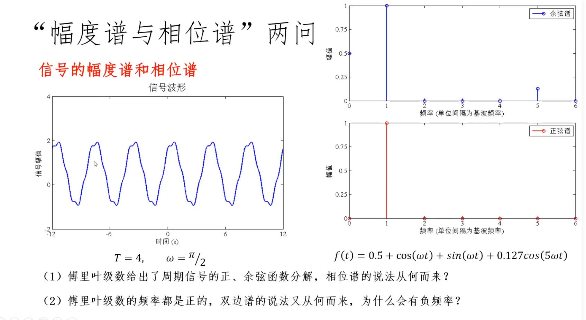
- 首先，给出时域上的波形，看不到具体的内容，只能大致上看出是一个周期信号，周期大致看出=4，通过周期信号的自相关，可以准确的判读出周期信号的周期
- 周期信号周期=4，此时根据计算 \(\omega_0 = \frac{2\pi}{T}=\frac{\pi}{2}\) 表示==基波==频率 = \(\frac{\pi}{2}\)
- 通过傅里叶级数得到具体的余弦谱和正弦谱，但实际上并没有余弦谱和正弦谱的说法
- 通过上图右图，可以看出信号含有的正弦信息和余弦信息：
- 还有直流分量 \(0.5\)、1 次谐波的余弦分量，1 次谐波的正弦分量，还有一个 5 次谐波的余弦分量，同时它的振幅是0.127，同时在这里的正弦谱和余弦谱的表示上也十分清晰的
- 但是，在实际应用中，并没有余弦谱和正弦谱的概念，问题就在为什么傅里叶级数给出的也是正余弦函数的分解，相位谱怎么来？双边谱，幅度谱？
回答，首先，图中显示的直流分量 0.5放在了余弦谱上，那为什么不放在正弦谱上上？或者将直流分量平均分配在正弦函数 和 余弦函数上？也就是说这里直流分量就出现了歧义，不符合严谨的特性。所以，频谱分析为了严谨，不用余弦谱和正弦谱，用的是幅度谱和相位谱，有了 sinx 和 cosx 用辅助角公式即可得到幅度和相位
幅度谱和相位谱¶
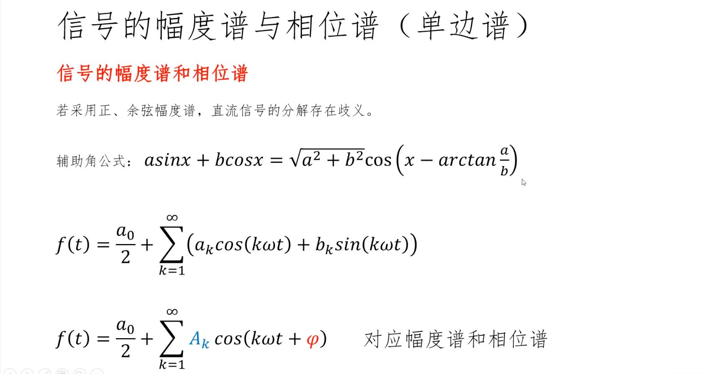
- 通过辅助角变换，周期信号的分解可以统一变成余弦函数的表现形式
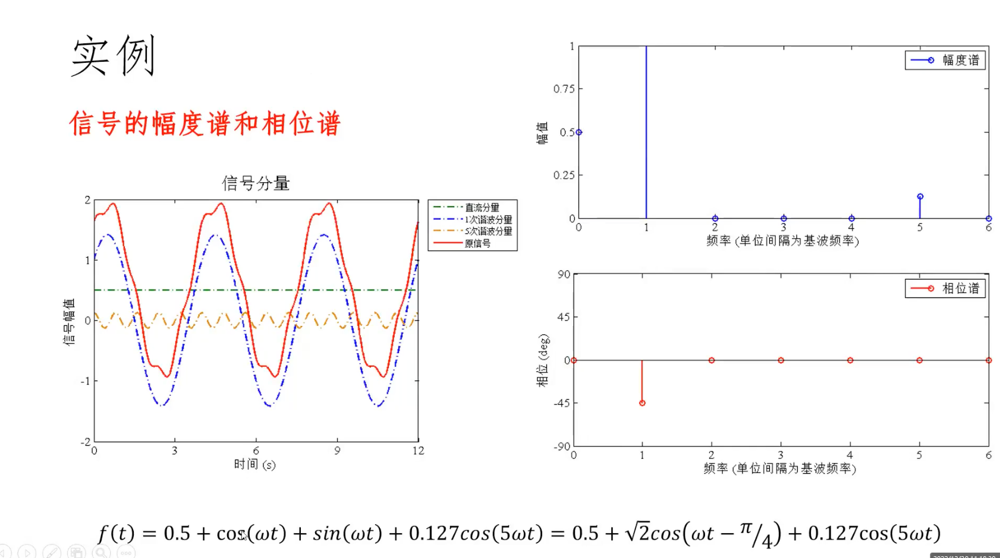
- 看这个实例，将相同频率的谐波利用辅助角公式统一用余弦函数表示，得到幅度谱和相位谱
- 看图，或者看傅里叶级数的辅助角形式：直流分量=0.5，1 次谐波的分量\(=\sqrt{2}\) ，5 次谐波分量对应的 幅值 =0.127，同时在 1 次谐波分量上有一个 \(-\frac{\pi}{4}\)的滞后相位
以上详细说明了幅度谱和相位谱。
双边谱¶
- 双边谱就是借助欧拉公式，将傅里叶级数余弦函数表示的辅助角形式转换为 \(e\) 的复指数形式


- 将余弦信号表示单边谱变成复指数形式表示双边谱
- 区别&联系
- 双边谱的 幅值，由 单边谱的幅值 减半，对称到负频率上
- 相位大小不变，频率进行奇对称
举例子：

- 单边谱和双边谱 本质是一样的，但是表达形式是不同的
单边谱：
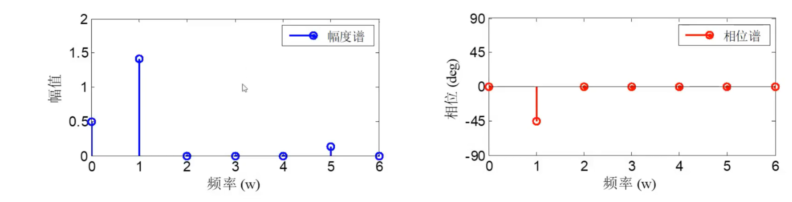
- 这里的单边谱是余弦函数的分解形式，在一次谐波上有幅值，5 次谐波上有幅值
- 相位谱：在 1 次谐波上有滞后
对应的表达式：
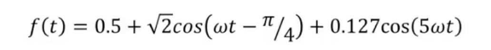
- 接下来将两个余弦变成复指数相加 除以 2 的形式，得到幅度谱，同时幅度谱产生了正负两种频率，对应的幅度减半，并且是偶对称的
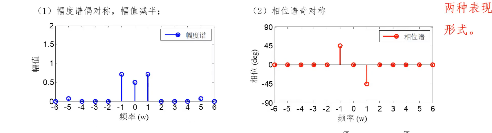
表达式：
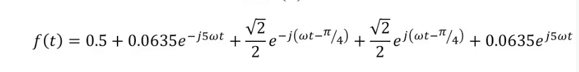
相位在正频率上有一个滞后的 45°，负频率上也有一个==滞后的== 45°，并且是奇对称的，所以有一个==超前== 45 度的相位。
🔵 如何理解 双边谱的负频率¶
简单说就是旋转方向不同，正方向是逆时针旋转，对应的，反方向是顺时针旋转。
从下面的图也可以看出来
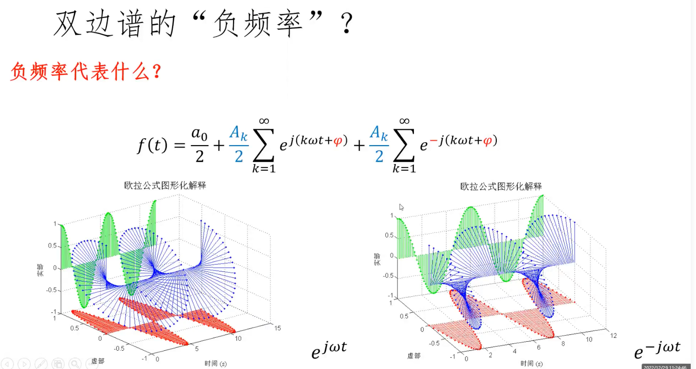
- 这个 谐波 \(k \omega t\) ，就有点意思
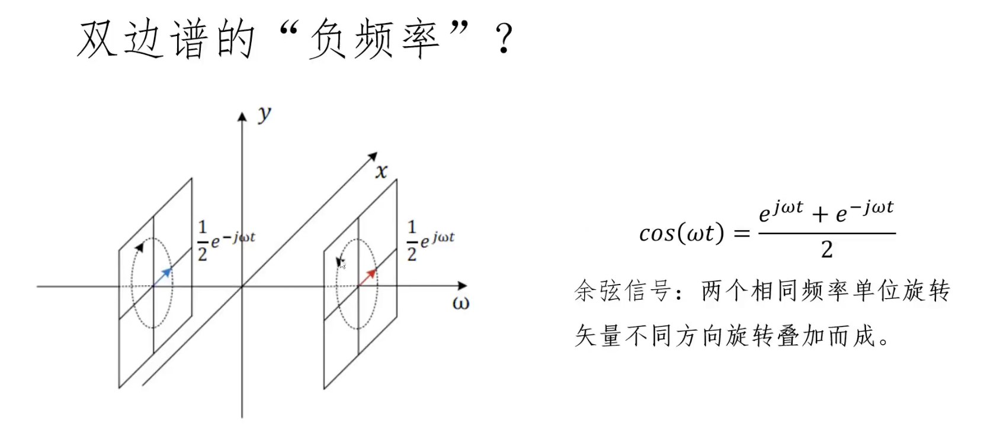
复指数表示形式：
复指数函数正交基¶
统一了直流分量 \(k=0\)
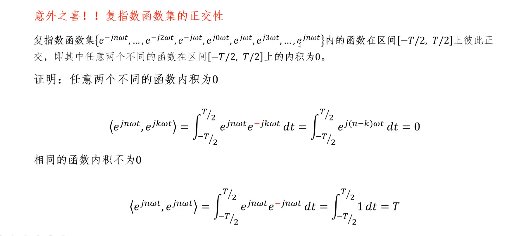
- 这里，这个负号？
傅里叶级数的复指数形式¶
级数讨论的是周期函数，变换是非周期函数
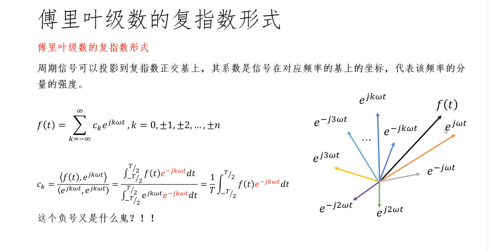
- 在每个正交基上的投影就是系数，同样用内积之比进行计算
为什么在计算内积的时候用负号？¶
与复数相关：
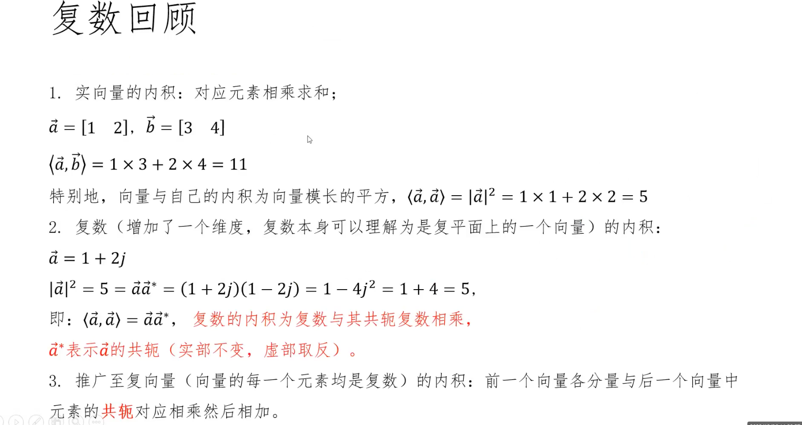